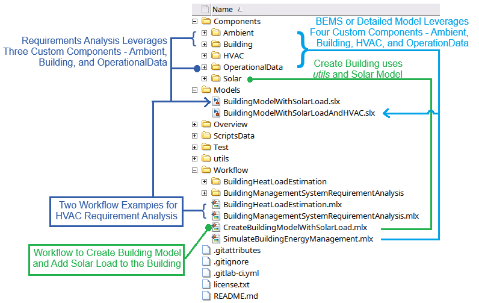
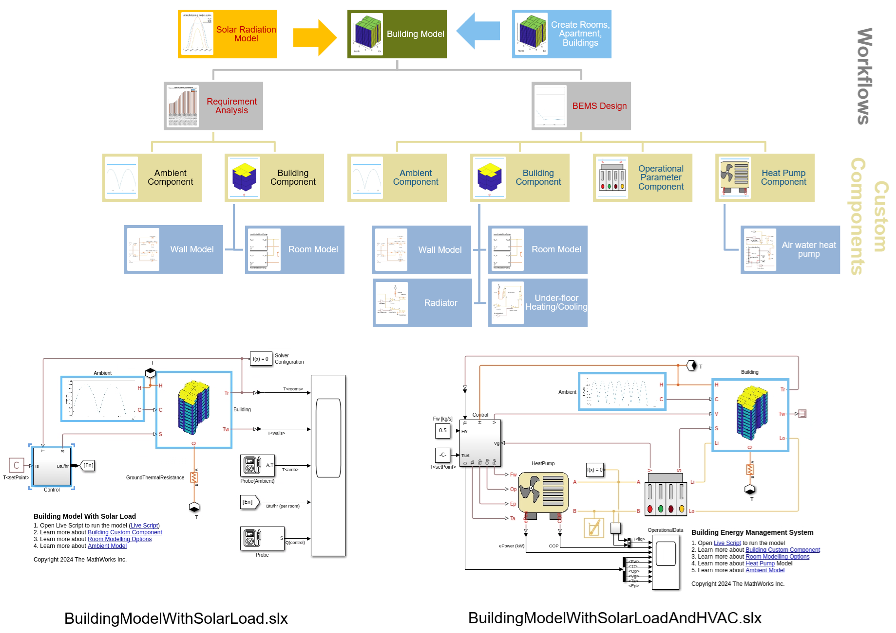

Building Energy Management System with Simscape
This project contains custom libraries, models, and code to help you analyze a building energy HVAC requirements and design controllers for building energy managmement systems, BEMS.
Contents
Building energy management is an important step when addressing energy goals and the transition to clean energy. Enhanced energy management in buildings supports the transition to renewable energy sources, aids in the global commitment to limit temperature rise, and combats climate change. In this project, you will learn how to create a system-level model using Simscape™ and Simscape Fluids™ to assess building HVAC needs and develop BEMS.
The end of this document contains a workflow representation. Live Script based workflows are used to parameterize Simscape Custom components for building energy simulations.
Create Building Models Quickly and Analyze Solar Loading
To learn how to create buildings quickly and define solar loading on them, see Create Building Model with Solar Loads. In this workflow, you will learn how to define rooms, create apartments, and construct a 3D building. At the end of the workflow, you will be able to save your building definition in a XML part and use it later or share with others.
Analyze Building HVAC Requirements Across Different Seasons, Geography
There are two workflows in this section that leverage the same model SLX file, BuildingModelWithSolarLoad. This model uses two different custom Simscape blocks - the Building and the Ambient block to simulate energy requirements or building heat load.
- In the first workflow, Simulate Building Model for HVAC Requirement Analysis, you will learn how to evaluate the building system for HVAC requirements over a period of one week.
- In the second workflow, Building Heat Load Estimation, you will learn how to compare a house heat loading and HVAC requriements in several different cities, over a period of one year.
Model Heat Pump, Detailed HVAC, and Building Energy Management System
To learn how to evaluate actual energy consumption and design controllers, see Simulate Building Model for BEMS Design. This will open a live script which sets up the model, parameterizes it, and opens the model to run. This is a detailed model that uses four different custom Simscape blocks - the Building , the Heat Pump , the Ambient , and the Operational Data blocks. To learn more about each custom block, open the block mask and see the documentation link. You will also learn how to specify and evaluate different heating and/or cooling options for a building room: radiator, under-floor piping, or both.
Appendix A: Custom Component Documentation
To learn more about the different custom components used in the simulation:
- See Building Model Documentation to learn more about the building custom component.
- See Ambient Model Documentation to learn more about the ambient model custom component.
- See Heat Pump Model Documentation to learn more about the datasheet (EN14511) based heat pump models.
- See Building Operational Data Documentation to learn more about the block.
Appendix B: Overall Workflow Pictorial
There are 2 SLX models that are used in different analysis. Both these models use one or more of the above specified custom components. The two SLX models are:
- BuildingModelWithSolarLoad.slx - used for HVAC requirement analysis.
- BuildingModelWithSolarLoadAndHVAC.slx - used for BEMS analysis.
The picture below shows the composition of these two models. The first SLX model, BuildingModelWithSolarLoad, makes use of two custom component - Building and Ambient. The second SLX model, BuildingModelWithSolarLoadAndHVAC, makes use of all four custom components - Building, Ambient, Operational Data, and Heat Pump. The room model options vary between the rooms defined in Building block for BuildingModelWithSolarLoad.slx and BuildingModelWithSolarLoadAndHVAC.slx. In the BuildingModelWithSolarLoad SLX model, the Building has rooms defined as thermal mass and connected to the Wall (wall, roof, floor) custom components. In the BuildingModelWithSolarLoadAndHVAC SLX model, the Building has rooms defined as thermal mass and connected to Wall (wall, roof, floor) and HVAC components like Radiator and Underfloor Piping. The room fidelity is controlled through a drop-down list within the Building block mask.

